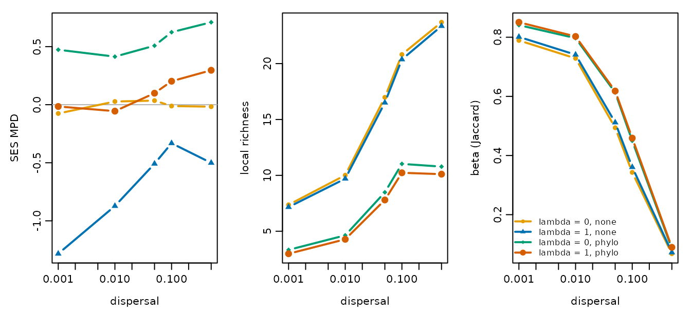

Dispersal, niche conservatism and phylogenetic community structure
Source:vignettes/phylogenetic-structure.Rmd
phylogenetic-structure.RmdThis vignette uses comdynamite, which implements the model of Thompson et al. (2020), to ask an ecological question: how do dispersal, phylogenetic signal in niches and competition among relatives combine to shape the phylogenetic structure of local communities? Phylogenetic clustering is often read as evidence of environmental filtering on conserved niches, and overdispersion as evidence of competition (Webb et al. 2002). Because a simulation fixes the processes, it shows how far those readings hold once dispersal also operates.
The simulations take a few minutes, so the results were computed in
advance and are loaded below. The complete script is data-raw/vignette_ecology.R.
Design
We cross three factors:
- dispersal, the emigration probability, from 0.001 to 0.5;
-
niche conservatism: optima without phylogenetic
signal (
lambda = 0) or evolving under Brownian motion (lambda = 1); - competition: none among species, or stronger between close relatives.
Each replicate draws one tree of 30 species and one landscape of 25
sites, and uses them in all scenarios, so that scenarios are compared on
the same regional pool. Traits are drawn once per value of
lambda and shared across dispersal rates and competition
types.
library(comdynamite)
tree <- treeshapesim::sim_tree_shape(30)
land <- landscape_implicit(25)
traits <- species_traits(tree, lambda = 1, sigma_mean = 8, sigma_sd = 2)
alpha <- competition_matrix(tree, "phylo", inter_max = 0.5)
sim <- simulate_metacommunity(land, traits, alpha, dispersal = 0.01, n_steps = 1000)For each simulation we record the mean local richness (alpha), the number of species in the metacommunity (gamma), the mean pairwise Jaccard dissimilarity among sites (beta), and the standardised effect size of the mean pairwise distance (SES MPD; computed with picante, Kembel et al. 2010), averaged over sites. SES MPD is negative under phylogenetic clustering and positive under overdispersion.
pa <- (sim$abundance > 0) * 1
pa <- pa[rowSums(pa) > 1, , drop = FALSE]
z <- picante::ses.mpd(pa, cophenetic(tree), null.model = "taxa.labels",
runs = 99)$mpd.obs.z
mean(z[is.finite(z)])run_scenarios() runs the whole design:
setup draws what a replicate shares, and
summary_stats() gives alpha, gamma, SES MPD and others,
with beta as gamma / alpha.
scenarios <- expand.grid(dispersal = c(0.001, 0.01, 0.1, 0.5), lambda = c(0, 1),
competition = c("none", "phylo"))
pool <- function() {
list(tree = treeshapesim::sim_tree_shape(30), landscape = landscape_implicit(25))
}
one_run <- function(scenario, shared) {
simulate_metacommunity(shared$landscape,
species_traits(shared$tree, scenario$lambda, sigma_mean = 8, sigma_sd = 2),
competition_matrix(shared$tree, as.character(scenario$competition),
inter_max = 0.5),
dispersal = scenario$dispersal, n_steps = 1000)
}
results <- run_scenarios(scenarios, one_run, pool, n_rep = 20)Here traits are drawn in each scenario. To share them across
dispersal rates and competition types, as we did, draw them in
setup.
The null model draws from all the species in the tree, which is the regional pool. Using only the species that persisted would remove the effect of regional extinction from the comparison.
Results
results <- readRDS("phylogenetic-structure.rds")
means <- aggregate(cbind(alpha, gamma, beta, ses_mpd) ~ dispersal + lambda + competition,
data = results, FUN = mean)
knitr::kable(means, digits = 2)| dispersal | lambda | competition | alpha | gamma | beta | ses_mpd |
|---|---|---|---|---|---|---|
| 0.00 | 0 | none | 7.37 | 28.97 | 0.79 | -0.08 |
| 0.01 | 0 | none | 10.01 | 29.03 | 0.73 | 0.03 |
| 0.05 | 0 | none | 16.98 | 29.07 | 0.49 | 0.04 |
| 0.10 | 0 | none | 20.81 | 28.97 | 0.34 | -0.01 |
| 0.50 | 0 | none | 23.70 | 24.80 | 0.07 | -0.02 |
| 0.00 | 1 | none | 7.16 | 29.13 | 0.80 | -1.28 |
| 0.01 | 1 | none | 9.70 | 29.20 | 0.74 | -0.87 |
| 0.05 | 1 | none | 16.51 | 29.13 | 0.51 | -0.51 |
| 0.10 | 1 | none | 20.37 | 28.93 | 0.36 | -0.33 |
| 0.50 | 1 | none | 23.36 | 24.47 | 0.07 | -0.50 |
| 0.00 | 0 | phylo | 3.33 | 18.30 | 0.84 | 0.47 |
| 0.01 | 0 | phylo | 4.63 | 18.27 | 0.80 | 0.41 |
| 0.05 | 0 | phylo | 8.48 | 18.20 | 0.61 | 0.51 |
| 0.10 | 0 | phylo | 11.03 | 17.73 | 0.45 | 0.62 |
| 0.50 | 0 | phylo | 10.78 | 11.40 | 0.09 | 0.71 |
| 0.00 | 1 | phylo | 2.99 | 17.53 | 0.85 | -0.02 |
| 0.01 | 1 | phylo | 4.28 | 17.57 | 0.80 | -0.06 |
| 0.05 | 1 | phylo | 7.80 | 17.33 | 0.62 | 0.10 |
| 0.10 | 1 | phylo | 10.23 | 16.77 | 0.46 | 0.20 |
| 0.50 | 1 | phylo | 10.11 | 10.70 | 0.09 | 0.30 |
groups <- unique(means[c("lambda", "competition")])
cols <- c("#E69F00", "#0072B2", "#009E73", "#D55E00")
old <- par(mfrow = c(1, 3), mar = c(4, 4, 1, 1), mgp = c(2.4, 0.7, 0))
for (v in c("ses_mpd", "alpha", "beta")) {
plot(means$dispersal, means[[v]], log = "x", type = "n", xlab = "dispersal",
ylab = c(ses_mpd = "SES MPD", alpha = "local richness", beta = "beta (Jaccard)")[v])
if (v == "ses_mpd") abline(h = 0, col = "grey70")
for (g in seq_len(nrow(groups))) {
d <- means[means$lambda == groups$lambda[g] &
means$competition == groups$competition[g], ]
lines(d$dispersal, d[[v]], col = cols[g], lwd = 2, type = "b", pch = 15 + g)
}
}
legend("bottomleft", paste0("lambda = ", groups$lambda, ", ", groups$competition),
col = cols, pch = 15 + seq_len(nrow(groups)), lwd = 2, bty = "n", cex = 0.8)
par(old)Four patterns stand out.
Clustering needs both conserved niches and limited
dispersal. Without competition and with
lambda = 1, communities are clustered at low dispersal (SES
MPD near -1.3) and the signal weakens as dispersal increases, to between
-0.3 and -0.5 at the highest rates. Niche conservatism alone does not
produce clustering: immigrants keep species in sites that do not suit
them, so composition no longer reflects the match between niches and
environment.
Without phylogenetic signal, filtering leaves no phylogenetic
trace. With lambda = 0 and no competition, SES MPD
stays near zero at all dispersal rates, even though species are strongly
sorted by the environment at low dispersal (beta near 0.8).
Competition among relatives can hide filtering. With
lambda = 1, competition among relatives moves SES MPD from
about -1.3 to about zero at the lowest dispersal rate, which is close to
the random expectation although both processes are acting strongly. At
higher dispersal, communities become slightly overdispersed. A value
near zero therefore does not imply that assembly is random.
Taxonomic beta diversity does not see the phylogenetic
signal. Beta diversity depends on dispersal and competition but
is the same for lambda = 0 and lambda = 1. In
this model, the signal changes which relatives co-occur, not how
different sites are in composition.
Competition also reduces the size of the metacommunity: it halves local richness and, at the highest dispersal rate, gamma falls to about 11 of the 30 species. A likely explanation, which these simulations do not test directly, is that high dispersal exposes all species to the same competitors in every site.
Limitations
These results hold for the values used here. They come from one tree size, one landscape size and one strength of competition, and the magnitudes will change with those choices. The means are also averages over 30 replicates with a standard error of up to 0.2 for SES MPD, so small differences between scenarios should not be interpreted.
With competition among relatives and high dispersal, 1000 steps is
not an equilibrium: in a test run, regional exclusion continued slowly
up to 3000 steps. Without competition, richness was stable by 300 steps.
Before drawing conclusions from a new parameter set, check that the
statistics of interest have stabilised, for example with
record_steps in simulate_metacommunity().
SES MPD here uses presence and absence, so a single immigrant counts as much as a large population. Sink populations therefore have their full weight, and an abundance-weighted statistic may show a weaker effect of dispersal.
References
Kembel, S. W., Cowan, P. D., Helmus, M. R., Cornwell, W. K., Morlon, H., Ackerly, D. D., Blomberg, S. P., & Webb, C. O. (2010). Picante: R tools for integrating phylogenies and ecology. Bioinformatics, 26, 1463–1464. https://doi.org/10.1093/bioinformatics/btq166
Thompson, P. L., Guzman, L. M., De Meester, L., Horváth, Z., Ptacnik, R., Vanschoenwinkel, B., Viana, D. S., & Chase, J. M. (2020). A process-based metacommunity framework linking local and regional scale community ecology. Ecology Letters, 23, 1314–1329. https://doi.org/10.1111/ele.13568
Webb, C. O., Ackerly, D. D., McPeek, M. A., & Donoghue, M. J. (2002). Phylogenies and community ecology. Annual Review of Ecology and Systematics, 33, 475–505. https://doi.org/10.1146/annurev.ecolsys.33.010802.150448